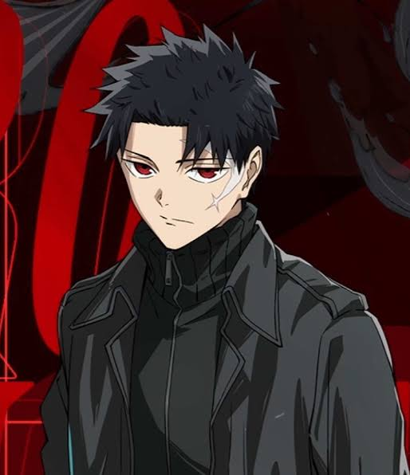

Chihiro Rokuhira
The protagonist character of Kagurabachi, he is the son of Kunishige Rokuhira and Chiaki Soga. After his father was murdered, he set out on a mission to retrieve the Enchanted Blades and defeating the Hishaku, the ones responsible for his death.